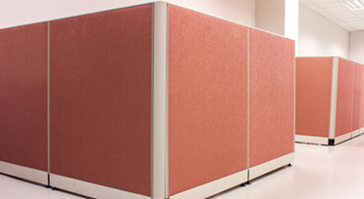

インテリアクリーニングは
まとめてタックにお任せ
タックではその他のインテリアクリーニングも承っております。インテリアクリーニングのプロフェッショナル・タックなら、オフィスやリビングなど、あなたの身の回りをプロの技術でよみがえらせます。
インテリアクリーニングは
まとめてタックにお任せ
タックではその他のインテリアクリーニングも承っております。インテリアクリーニングのプロフェッショナル・タックなら、オフィスやリビングなど、あなたの身の回りをプロの技術でよみがえらせます。
オフィス内のパーテーションは汚れていませんか？ 汚れたパーテーションは、オフィス全体のイメージを暗くしてしまうことも。そんなパーテーション も、当社のクリーニングシステムでキレイによみがえります。清潔なパーテーションで気持ちよく仕事ができるオフィス環境を作りましょう。